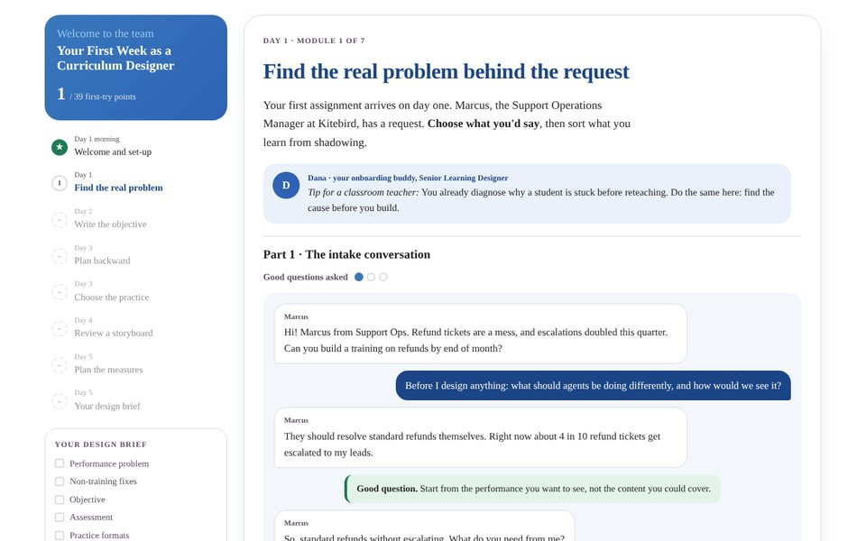

Your First Week as a Curriculum Designer

Click the image to experience the project.Purpose: New learning designers usually get a template folder and a deadline, then learn the real job by making mistakes on live projects. This role-based onboarding path lets them work one realistic assignment, from a stakeholder's "can you build a training?" to a design brief ready for sign-off, in about 25 minutes. An onboarding buddy adapts tips to each new hire's background.
Tools: HTML, CSS, JavaScript
Highlights: Needs analysis with Gilbert's Behavior Engineering Model, Action Mapping, ABCD objectives, backward design, Kirkpatrick evaluation, branching dialogue, adaptive feedback
Project Deliverables: Interactive Onboarding Path, Design Brief Template (built into the path)